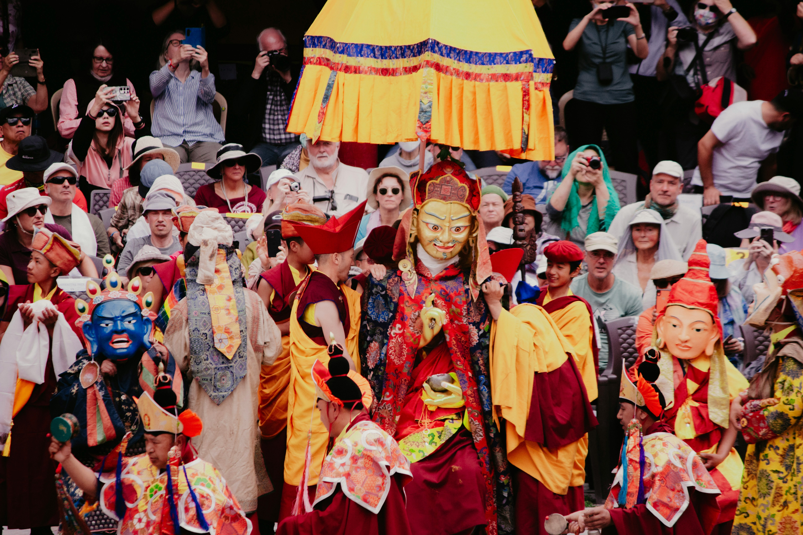
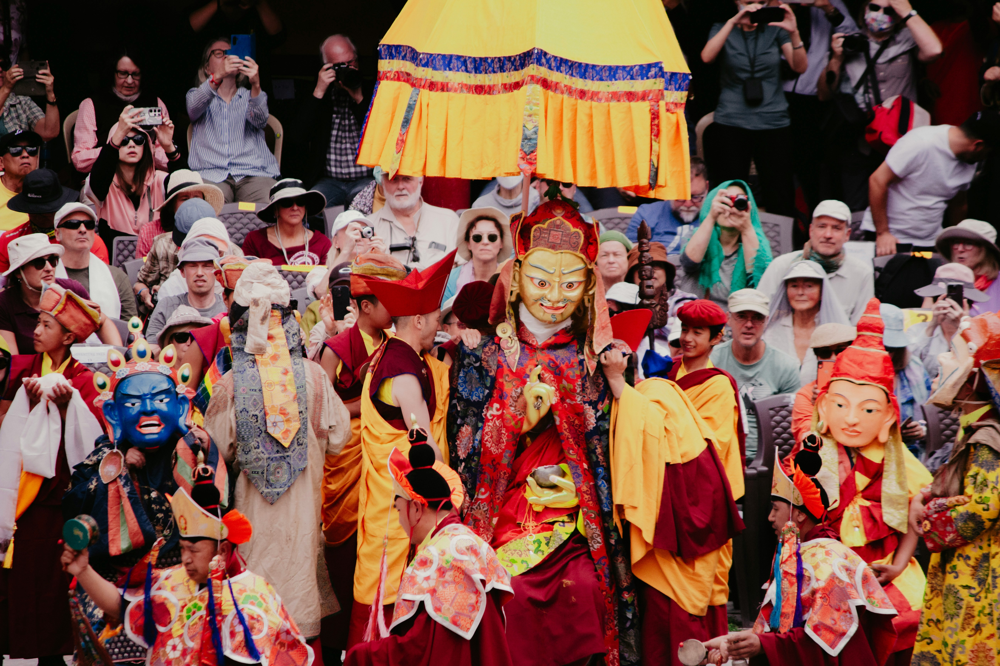
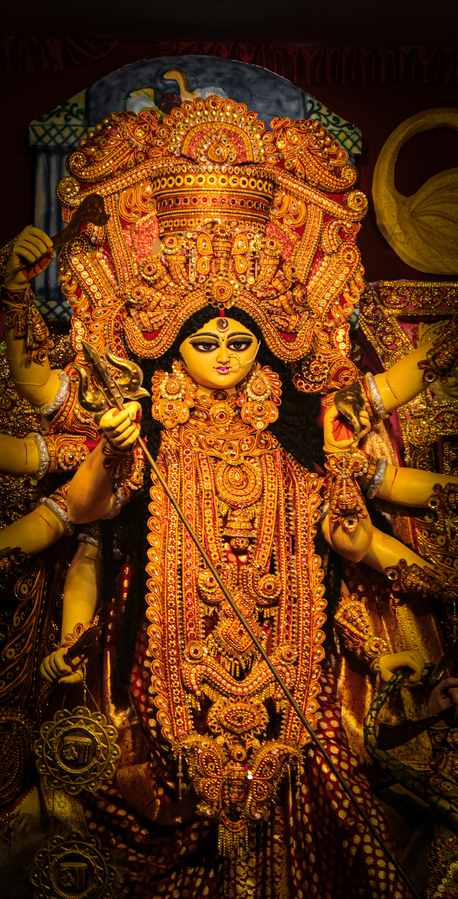
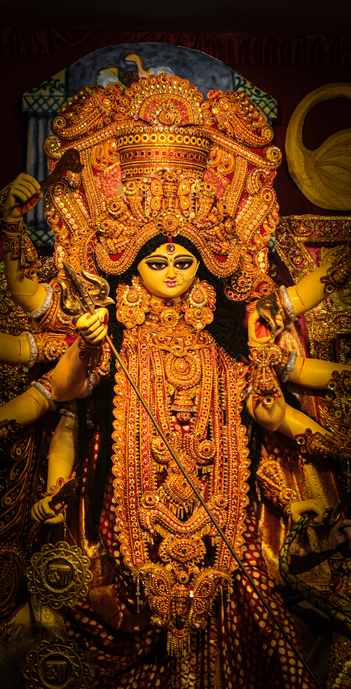

Heritage
Hover to explore
India's rich heritage is a vibrant tapestry of ancient architecture, timeless traditions, and diverse cultural expressions. From majestic forts to classical art forms, it reflects the soul of a civilization that has flourished for thousands of years.
Indian Festivals
Hover to explore
Celebrate the vibrant spirit of India through its festivals, where colors, lights, music, and traditions come together. From Diwali’s dazzling lamps to Holi’s joyful splashes of color, every festival tells a story of unity and cultural richness. These celebrations reflect the soul of India diverse, timeless, and full of life.
Travel
Hover to explore
Discover the breathtaking beauty of India from the snow-capped Himalayas in the north to the serene backwaters of Kerala in the south. Every journey here is a vibrant tapestry of culture, nature, and timeless heritage.


 


 
